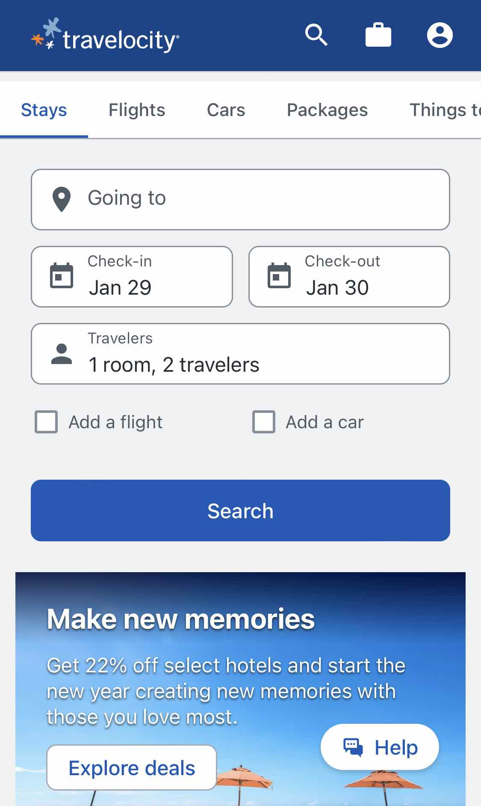
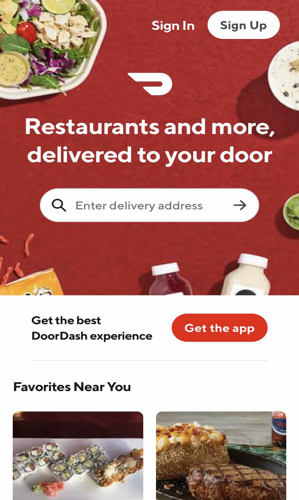
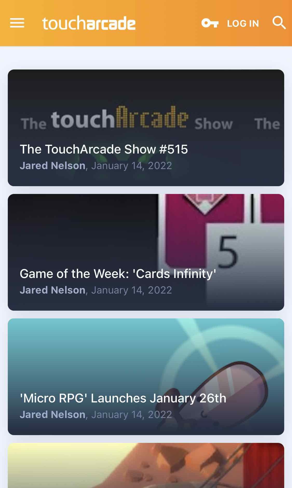

Visual Hierarchy
Travelocity
We live in a fast-paced, get-right-to-it, world today. When we're not browsing the web for fun, we're usually trying to accomplish a task. Travelocity is a great example of a company using Visual Hierarchy to give the user what they want right away. The first thing you notice is the search set up very intuitively. Below that is a link and advertisement for a current deal on offer for any user just looking as a possibility.
Colors
DoorDash
It has been proven that colors can elicit certain reactions within the human psyche. In this case, DoorDash is harnessing the power of the color red to induce hunger in the hopes that its users will ultimately purchase more than they originally planned, or to maybe snare those that are still debating.
Grid Layouts
TouchArcade
TouchArcade is obviously using a grid layout here, it's even more apparent on the desktop site. Using CSS Grids is one of the best ways to organize content on a webpage. In this case, the setup is very clean and swipe friendly.